Đồ án tốt nghiệp · Hệ thống tư vấn điều dưỡng Nhật Bản
Thiết kế giao diện trước khi triển khai
Bản 08/10/2026. Toàn bộ là mockup HTML tĩnh với dữ liệu minh họa từ đơn mẫu; không trang nào gọi máy chủ. Ảnh chụp bên dưới là ảnh chụp chính các trang mockup này trên trình duyệt (khổ 1280px và 390px), không phải ảnh của website đang chạy.
Cập nhật lần 2 — sau đợt sửa quyền và xác minh (08/10, chiều)
- Mới: mockup_kiem_tra_ho_so.html — bước B (làm rõ) và C (xác nhận) chuyển như slide do người dùng bấm: nút "Tiếp"/"Quay lại", không tự trượt theo thời gian; chuyển xong tiêu điểm về tiêu đề bước mới, bước cũ bị khóa (
inert); bật giảm chuyển động thì chuyển tức thì. Bấm thử được.
- Nền phong cảnh nhẹ ở trang tư vấn: ảnh mờ dưới lớp phủ ngà 90%; bảng và chữ luôn nằm trên thẻ trắng đặc nên tương phản không phụ thuộc ảnh. Trang nội bộ giữ nền phẳng, không ảnh, không chuyển động.
- Bốn mức tiếng Nhật có nhãn chữ riêng: tự khai · đang học (chưa có) · đã đạt theo kết quả trung tâm · có chứng chỉ.
- Khách sửa mục nhân viên đã ghi: thông báo "chưa đổi, đã gửi nhân viên xem lại" thay cho im lặng; phía nhân viên có khối "Đề xuất của khách chờ bạn xem" (Giữ nguyên / Sửa theo khách).
- Hàng đợi của nhân viên thường: việc chưa nhận chỉ hiện tên viết tắt, loại việc, đơn, thời gian; số điện thoại, lời nhắn, phiếu mở sau khi nhận. Đã có trên bản dựng thật (ảnh dưới), mockup trình bày lại cùng quy tắc.
- Nhãn điểm chi phí/lương: tách "bạn chưa nêu ngân sách" với "đơn chưa công bố chi phí"; điểm 5/10 ghi rõ là trung lập. Đã có trên bản dựng thật.
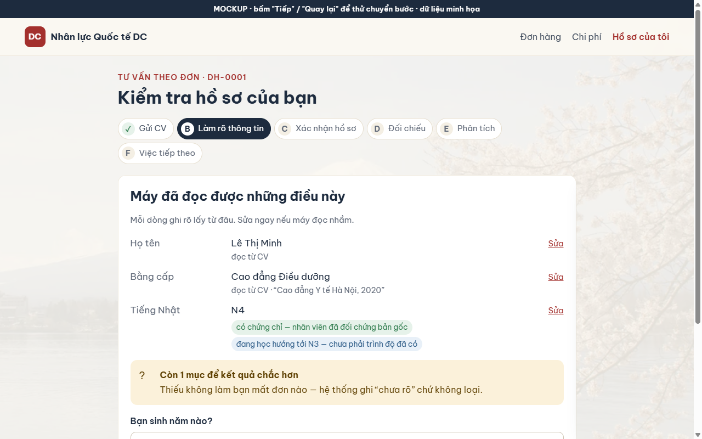
MOCKUP — bước B, nền phong cảnh nhẹ, nhãn bốn mức tiếng Nhật.
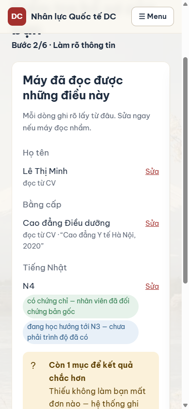
MOCKUP — bước B trên điện thoại.
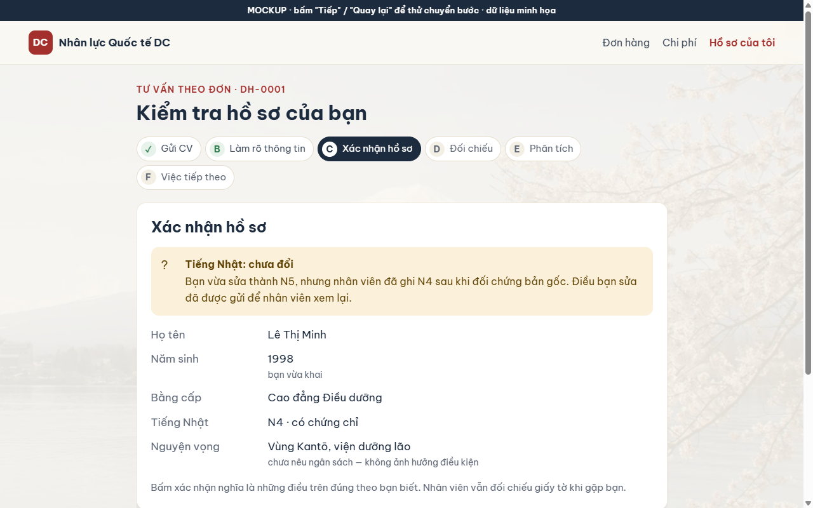
MOCKUP — bước C sau khi bấm "Tiếp": thông báo mục nhân viên đã ghi.
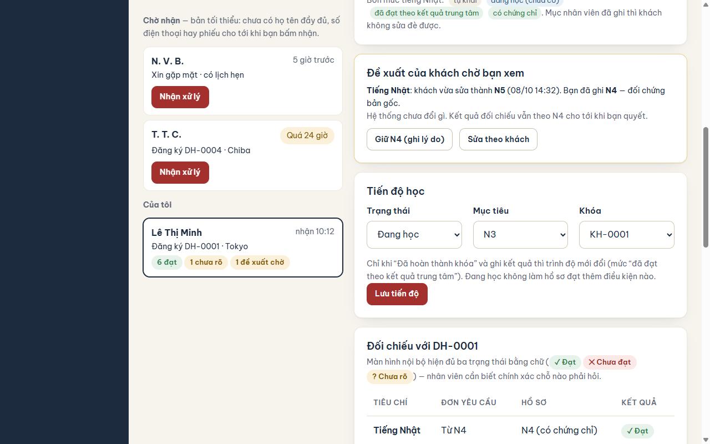
MOCKUP — nhân viên: đề xuất chờ xử lý, tiến độ học.
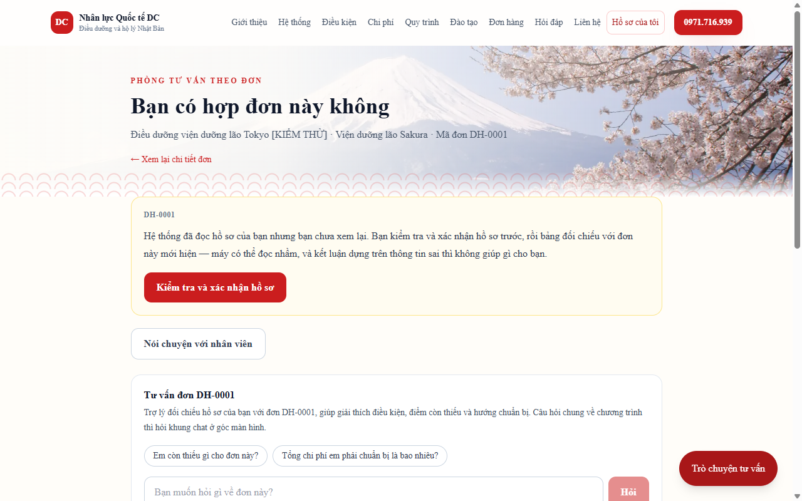
BẢN DỰNG THẬT (database thử) — API trả 409 mã ho_so_chua_xac_nhan, trang mời xác nhận.
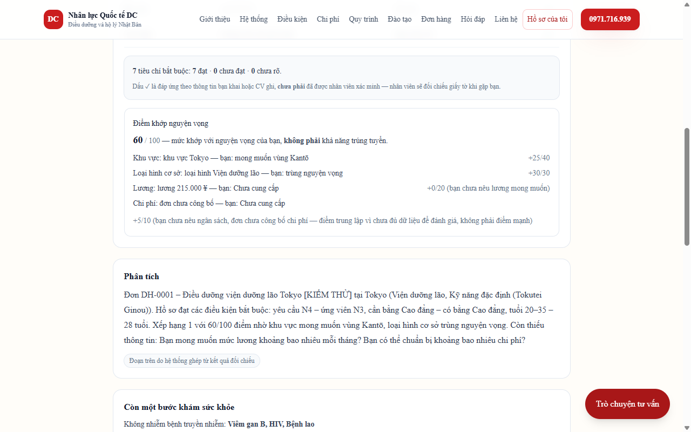
BẢN DỰNG THẬT — nhãn điểm trung lập của chi phí.
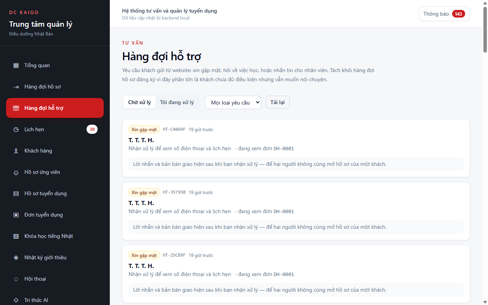
BẢN DỰNG THẬT — hàng đợi hỗ trợ khi đăng nhập consultant.
Ảnh bản dựng thật cho thấy chữ website vẫn có chân (serif). Đã tìm được cơ chế: HTML mang lớp __variable_83907a còn CSS định nghĩa __variable_021202, nên --font-sans rỗng. Giả thuyết: do chạy next build rồi next dev trên cùng thư mục .next — chưa kiểm trên bản production. Sửa phòng thủ đề xuất: var(--font-sans, system-ui).
1. Sơ đồ điều hướng
Website khách — công khai
- Trang chủ → Đơn hàng · Điều kiện · Chi phí · Quy trình · Hỏi đáp · Liên hệ
- Đơn hàng (lọc) → Chi tiết đơn → "Tôi có hợp đơn này không?"
- Khung chat chung (góc màn hình): hỏi về chương trình, không xem hồ sơ
Luồng tư vấn — theo phiên, không cần đăng nhập
- /tu-van: A Gửi CV / khai tay → B Làm rõ → C Xác nhận
- → D Danh sách đơn đủ điều kiện hoặc bảng đối chiếu một đơn (/tu-van/don/[mã])
- → E Phân tích + hỏi thêm → F Xác nhận đăng ký / gửi nhân viên
- Hồ sơ của tôi: theo dõi đăng ký, yêu cầu, lịch hẹn
Nội bộ — cần đăng nhập
- Tổng quan (quản lý: việc chờ, ai quá tải, đơn sắp hết hạn)
- Hàng đợi hồ sơ · Yêu cầu hỗ trợ · Lịch hẹn · Hồ sơ ứng tuyển · Khách hàng
- Dữ liệu: Đơn tuyển dụng · Khóa học · Nhật ký giới thiệu
- Quản lý/Admin: Điểm nhân viên · Người dùng · Nhật ký hệ thống
2. Luồng thao tác
Khách hàng
AGửi CV (PDF, .docx, ảnh) hoặc khai tay
→
BXem điều máy đọc được, trả lời mục còn thiếu
→
CXác nhận hồ sơ (bắt buộc trước khi có kết quả)
→
DBảng đối chiếu ✓ với đơn đã chọn
→
ETổng kết, điểm nguyện vọng, phân tích AI, hỏi thêm
→
FĐăng ký, học, xem đơn khác hoặc gặp nhân viên
Đạt mọi điều kiện bắt buộc → nút "Đăng ký đơn này" → màn xác nhận nói rõ sẽ gửi gì → mã hồ sơ, gọi lại trong giờ hành chính.
Có điều kiện chưa đạt → không có nút đăng ký → ba lối: hướng học (nếu vướng tiếng Nhật), đơn khác đủ điều kiện, nói chuyện với nhân viên.
Có mục chưa rõ → trả lời ngay ở "Cần bổ sung" → bảng tính lại; kết quả cũ mờ đi có nhãn, không tự đổi khi khách đang đọc.
Nhánh lỗi: CV không đọc được → chọn tệp khác hoặc khai tay (không mắc kẹt). Trợ lý bận → tóm tắt tự động có nhãn, không giả làm câu trả lời. Gửi lại → cùng mã, không tạo trùng. Chưa xác nhận → không bảng, không kết luận.
Nhân viên
1Hàng đợi: chờ nhận
→
2Nhận xử lý (một người nhận được)
→
3Đọc phiếu: nguồn từng dòng, chỗ chưa rõ
→
4Gọi điện / gặp, đối chứng giấy tờ
→
5Ghi kết quả sơ tuyển (trình độ + trạng thái một lần)
→
6Chuyển / trả về hàng đợi nếu cần (quản lý chuyển)
3. Vì sao bố cục này giúp khách hiểu
- Bảng đứng trước lời văn. Câu hỏi trong đầu khách là "tôi có hợp không, vướng ở đâu". Bảng trả lời bằng dữ kiện đặt cạnh nhau; đoạn phân tích của AI đứng sau, để giải thích chứ không thay bảng. Trước đây khung chat đứng trên cùng và bảng phải bấm mới mở.
- Chỉ một ký hiệu ✓. Người ít dùng máy đọc một cột ✓ nhanh hơn ba màu ba chữ. Dấu ✗ đỏ cạnh "chưa cung cấp" dễ đọc thành "bị loại" — nên phần nhìn thấy chỉ có ✓, còn tổng kết bên dưới nói rõ bằng chữ đâu là chưa đạt, đâu là chưa rõ.
- Hỏi đúng chỗ thiếu. Mục "Cần bổ sung" có ô trả lời ngay cạnh bảng (máy tính) hoặc ngay sau tổng kết (điện thoại). Không bắt khách quay lại biểu mẫu dài để sửa một năm sinh.
- Mỗi dòng hồ sơ nói nguồn. "bạn khai", "đọc từ CV · bạn đã xác nhận", "nhân viên đã xác minh". Khách biết máy đọc gì; nhân viên biết dòng nào phải hỏi kỹ.
- Bước tiếp theo luôn có lối đi. Không đạt vẫn có ba hướng: học, đơn khác, gặp nhân viên. Không màn hình nào kết thúc bằng một lời từ chối trơn.
- Nhân viên thấy chính thứ khách thấy, cộng thêm ba trạng thái bằng chữ và nguồn của từng dòng — gọi điện không phải hỏi lại từ đầu.
4. Mockup màu
Mở trực tiếp: trang chủ · kết quả tư vấn · xử lý của nhân viên. Thu hẹp cửa sổ trình duyệt để xem bản điện thoại.
4.1 Kết quả đối chiếu và tư vấn AI
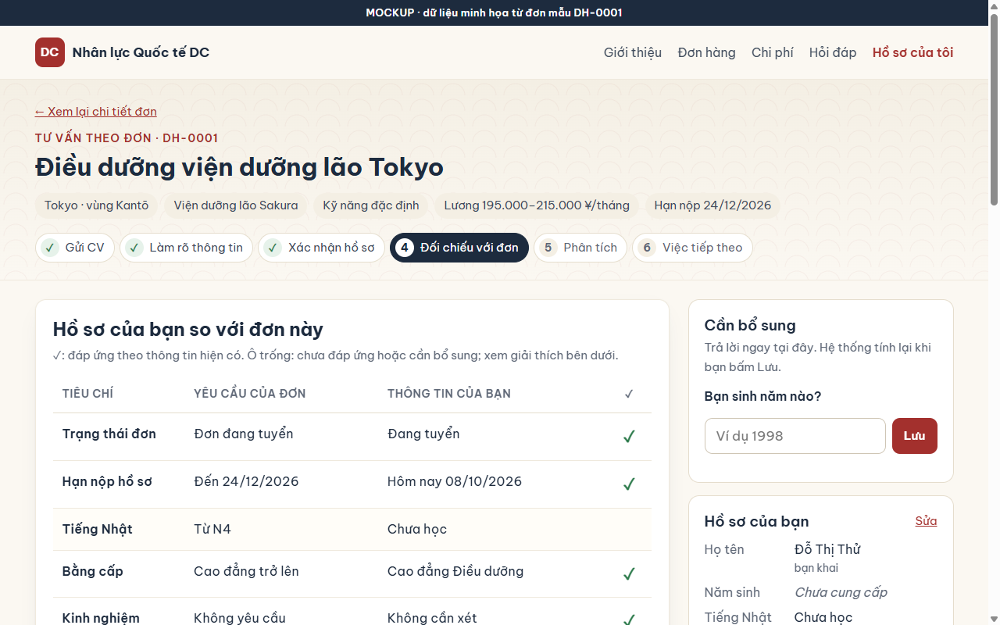
Máy tính — tên đơn, thông tin chính, thanh bước; bảng ✓ bên trái, "Cần bổ sung" và hồ sơ bên phải.
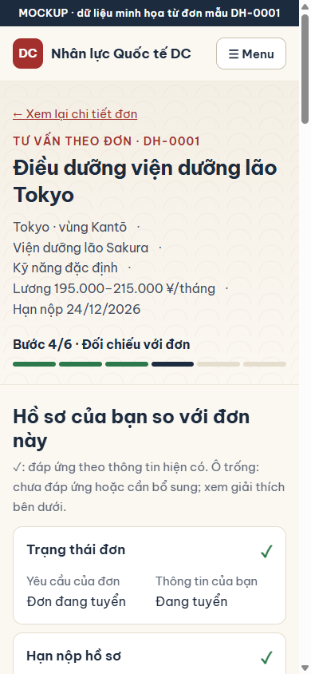
Điện thoại — thanh bước thu thành "Bước 4/6" kèm vạch.
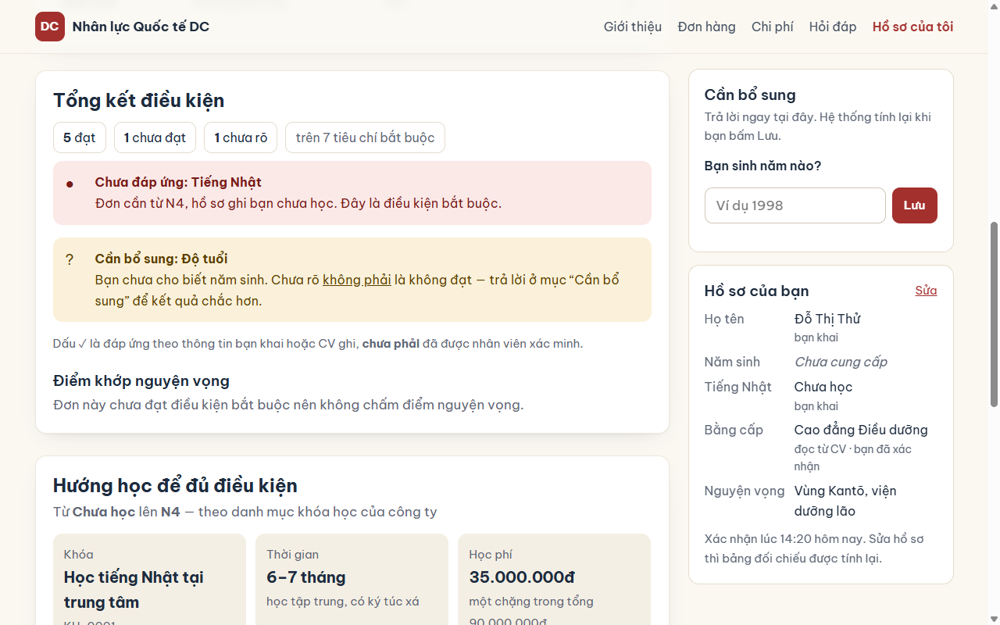
Tổng kết tách "chưa đạt" và "cần bổ sung"; điểm nguyện vọng không chấm vì đơn chưa đạt.
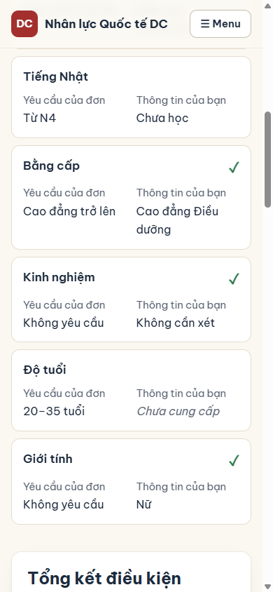
Mỗi tiêu chí một thẻ, hai cột "Yêu cầu" | "Của bạn", ✓ ở góc phải.
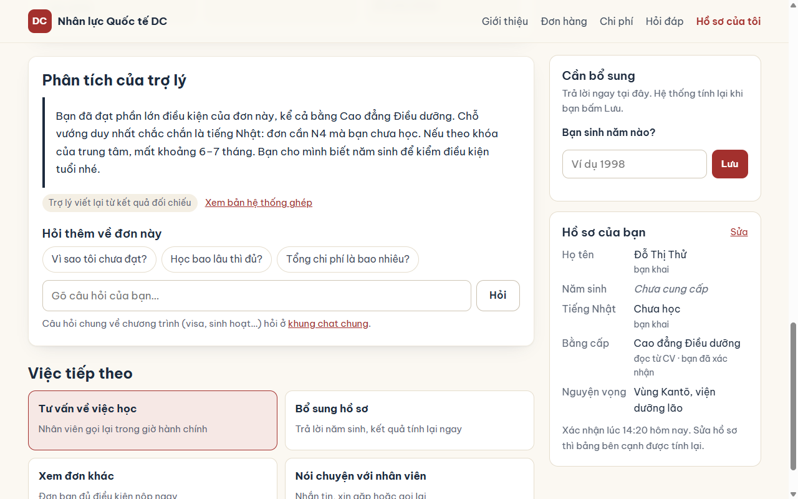
Phân tích của trợ lý có nhãn nguồn; ô hỏi thêm gọn; bốn việc tiếp theo.
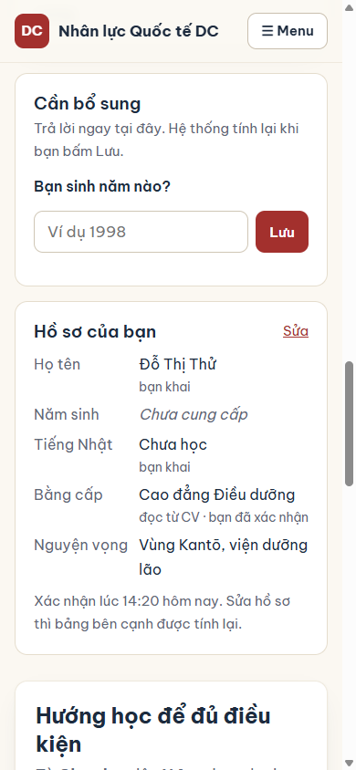
"Cần bổ sung" nằm ngay sau tổng kết trên điện thoại.
4.2 Trang chủ và danh sách đơn
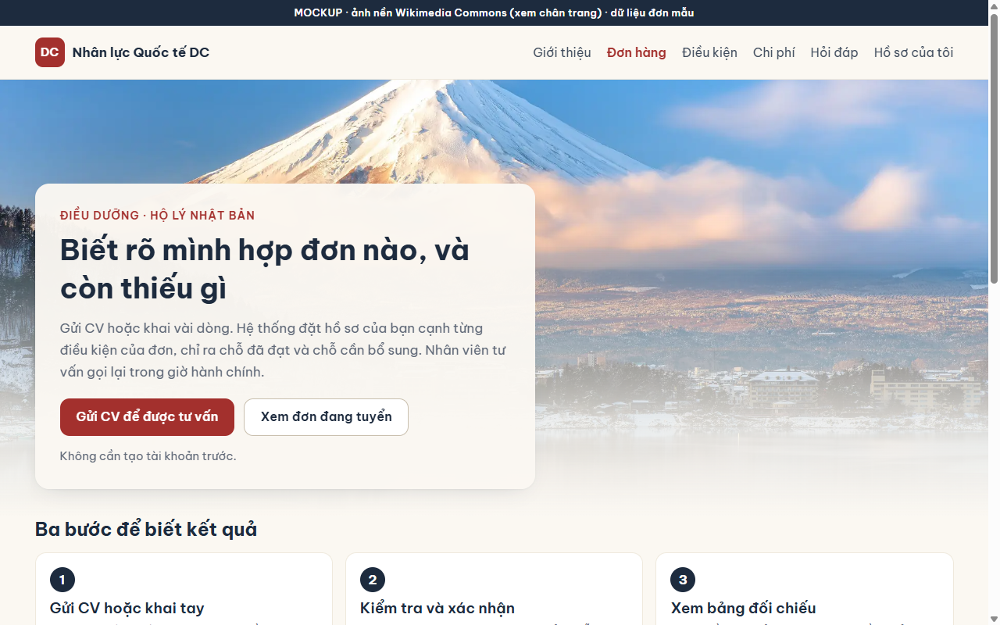
Phong cảnh chuyển cảnh chậm (3 ảnh, mỗi cảnh 12 giây). Chữ nằm trên tấm nền ngà đặc, không đặt thẳng lên ảnh. Ảnh chụp đúng lúc chuyển sang cảnh bình minh.
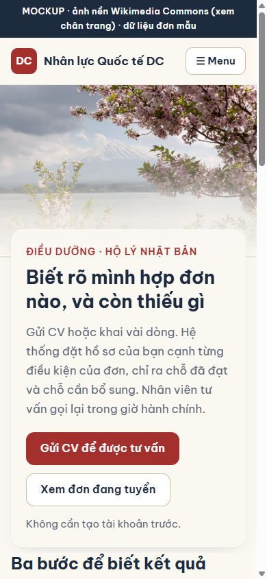
Điện thoại — ảnh thành dải trên, tấm chữ chồng nhẹ phía dưới.
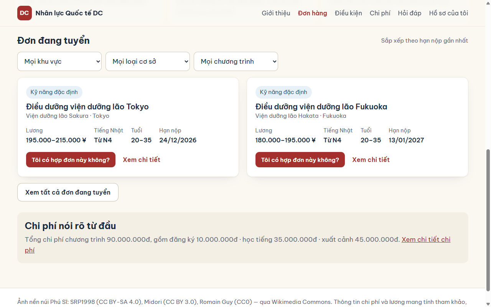
Thẻ đơn: bốn con số cần biết và nút "Tôi có hợp đơn này không?".
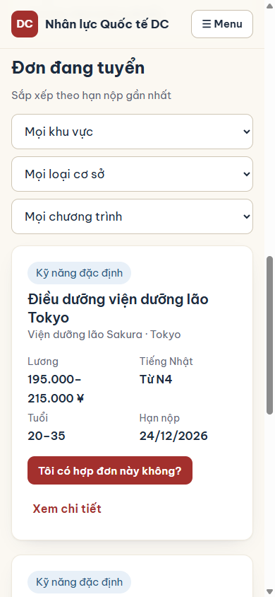
Điện thoại — bộ lọc mỗi ô một dòng (xem câu hỏi duyệt số 4).
4.3 Hàng đợi và xử lý của nhân viên
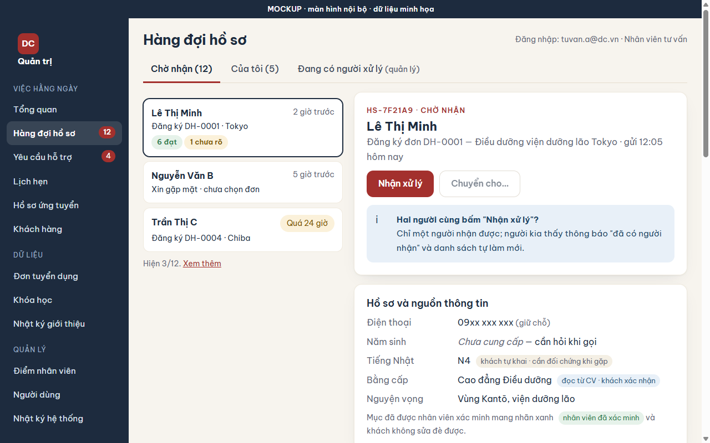
Danh sách bên trái (dính khi cuộn), phiếu chi tiết bên phải. Nút "Chuyển cho…" mờ với nhân viên thường.
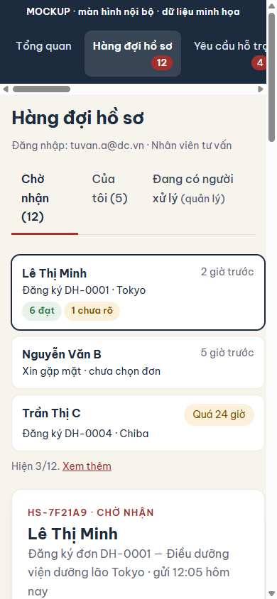
Điện thoại — menu cuộn ngang, danh sách rồi chi tiết.
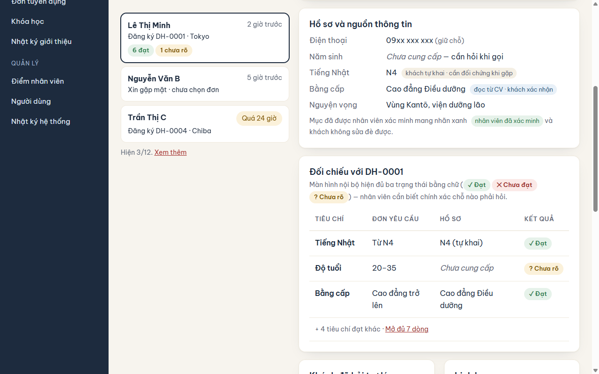
Nguồn và mức xác minh từng dòng; đối chiếu hiện đủ ba trạng thái bằng chữ cho nhân viên.
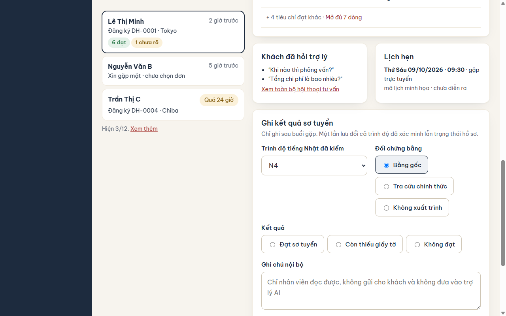
Ghi kết quả sơ tuyển: trình độ đã kiểm, cách đối chứng, kết quả, ghi chú nội bộ.
4.4 Mẫu trạng thái
Đủ 16 trạng thái ở thanh_phan.html mục 8.
5. Tận dụng màn hình đang có
| Màn hình | Tệp hiện có | Làm gì | Mức |
|---|
| Trang chủ | app/(site)/page.tsx, PhotoBackdrop.tsx, AnimatedBackground.tsx | Tấm chữ nền ngà; chuyển cảnh 3 ảnh đã có giấy phép; bớt khối trang trí; đổi màu theo bộ mới | Sửa bố cục |
| Danh sách đơn | don-hang/page.tsx | Thẻ đơn có 4 số chính + nút "Tôi có hợp?"; bộ lọc một hàng | Sửa nhẹ |
| Chi tiết đơn | don-hang/[code]/page.tsx | Thẻ "Tôi có hợp?" dính bên phải / ngay dưới tiêu đề trên điện thoại; tên điều kiện trùng tên tiêu chí bảng | Sửa nhẹ |
| Gửi CV / khai tay | tu-van/page.tsx, CvUpload.tsx, ConsultationFlow.tsx | Hai lối vào ngang hàng; thanh bước A–F (đã có BuocTuVan.tsx) | Sửa bố cục |
| Kiểm tra hồ sơ | ConsultationFlow.tsx, fields.tsx, AdvisorChat.tsx | Hồ sơ hiện thành danh sách có nguồn, sửa tại chỗ; câu hỏi thiếu trả lời tại chỗ; trợ lý thu gọn | Sửa nhiều |
| Kết quả đối chiếu | OrderConsultationRoom.tsx, OrderAdvicePanel.tsx, BangDoiChieu.tsx, MatchCard.tsx | Bố cục hai cột; "Cần bổ sung" + hồ sơ ở cột bên; bốn việc tiếp theo | Sửa bố cục (dữ liệu đã có) |
| Xác nhận / gửi nhân viên | SupportRequestForm.tsx, khung xác nhận trong MatchCard.tsx | Gộp thành một màn xác nhận chung "sẽ gửi gì, cho ai" | Sửa nhiều |
| Hàng đợi + chi tiết | admin/queue, admin/support, admin/applications, admin/profiles/[code] | Danh sách + chi tiết cùng màn; nhãn nguồn/xác minh; đối chiếu ba trạng thái | Sửa bố cục |
| Trang quản lý | admin/page.tsx, staff-scores, users, audit-logs | Tổng quan trả lời "việc chờ, ai quá tải, đơn sắp hết hạn" | Sửa vừa |
| Khung chat chung | components/Chat* | Giữ tách biệt; trên trang tư vấn ở điện thoại không để nút nổi che nội dung | Sửa nhẹ |
Không thêm thư viện giao diện mới. Bảng màu đưa vào tailwind.config.ts của cả hai app để hai bên dùng chung tên màu.
6. Chuyển động
| Chỗ | Chuyển động | Khi bật giảm chuyển động |
|---|
| Phong cảnh trang chủ | 3 ảnh mờ dần nối tiếp, mỗi cảnh 12 giây, phóng nhẹ 4% | Đứng yên ở ảnh đầu, không tải hai ảnh còn lại |
| Chuyển bước A→F | Nội dung bước mới hiện dần 0,45 giây, trượt lên 8px; cuộn đến đầu bước | Hiện ngay, không cuộn mượt |
| Bảng đối chiếu | Hiện một lần khi tải xong. Không tự đổi khi khách đang đọc: có kết quả mới thì hiện nút "Xem kết quả mới" | Như trên, không hiệu ứng |
| Trợ lý đang trả lời | Ba chấm nhấp nháy cạnh chữ "Trợ lý đang viết…" | Chỉ còn chữ |
| Chữ quan trọng | Không bao giờ chuyển động liên tục (không chữ chạy, không nhấp nháy tiêu đề) | — |
| Hoa rơi, mây trôi đang có | Đề xuất bỏ khỏi trang tư vấn; chỉ giữ ở trang chủ nếu anh/chị muốn | Tắt |
7. Khả năng tiếp cận
- Cỡ chữ gốc 17px; chữ nhỏ nhất 15px; dòng 1,65. Nút cao tối thiểu 48px.
- Không dùng màu hoặc ký hiệu làm phương tiện duy nhất: ✓ có chữ ẩn "Đáp ứng", ô trống có "Chưa đáp ứng hoặc chưa rõ"; tổng kết nói bằng chữ.
- Viền focus xanh 3px ở mọi nút, ô nhập, liên kết. Thứ tự tab bằng thứ tự đọc.
- Nhãn ô nhập luôn nằm trên ô; lỗi nói cách sửa.
- Không thanh nút cố định ở đáy điện thoại (che nội dung và bàn phím). Cột bên chỉ dính trên máy tính.
- Tỷ lệ tương phản trong bảng màu là tính toán ước lượng — phải đo lại bằng công cụ khi triển khai.
8. Thiết kế giả định những việc phía máy chủ chưa làm
- Nhãn "nhân viên đã xác minh" không bị khách sửa đè — hiện chưa có code giữ nhãn khi ô bị sửa (bước 4).
- "Cần bổ sung" trả lời tại chỗ rồi tính lại — dùng lại API sửa hồ sơ + đối chiếu có sẵn; cần kiểm khóa phiên bản để không ghi đè (trạng thái "xung đột dữ liệu").
- Kết quả cũ mờ đi, đợi khách bấm "Xem kết quả mới" — giao diện cần biết kết quả đang hiện thuộc phiên bản hồ sơ nào.
- Danh sách hàng đợi có số "6 đạt · 1 chưa rõ" — cần API hàng đợi trả kèm tóm tắt đối chiếu.
- Hồ sơ chưa xác nhận hiện chỉ chặn ở giao diện và khối gửi trợ lý, chưa chặn ở API.
9. Cần anh/chị duyệt
- Màu đỏ: đổi từ đỏ tươi #CB1D1E đang dùng sang đỏ trầm #A3302D cho cả website và nội bộ?
- Bố cục trang tư vấn: hai cột, cột bên ("Cần bổ sung" + hồ sơ) dính khi cuộn trên máy tính — hay một cột như điện thoại?
- Nhân viên xem ba trạng thái bằng chữ (✓ Đạt / ✕ Chưa đạt / ? Chưa rõ), khác với trang khách chỉ có ✓ — đồng ý?
- Bộ lọc đơn trên điện thoại: ba ô xếp dọc như mockup, hay thu vào một nút "Lọc đơn"?
- Hiệu ứng hoa rơi, mây trôi đang có: bỏ hẳn, hay chỉ giữ ở trang chủ?
- Nút chat nổi trên trang tư vấn ở điện thoại: ẩn và thay bằng liên kết "khung chat chung" trong khối hỏi thêm?
- Câu chữ trong các mẫu trạng thái là bản nháp — anh/chị sửa câu nào thì ghi lại, tôi dùng đúng câu đó.
- Chuyển bước dạng slide chỉ cho B–C (làm rõ, xác nhận); D–F (bảng, phân tích, việc tiếp theo) vẫn là một trang cuộn để khách so được bảng với phân tích — đồng ý?
- Nền phong cảnh nhẹ ở trang tư vấn (phủ ngà 90%) — giữ, hay để nền phẳng hoàn toàn?
- Tên viết tắt trong hàng đợi ("L. T. M.") cho nhân viên thường — đủ để phân biệt việc, hay bỏ hẳn tên cho tới khi nhận?
Sau khi duyệt, thứ tự triển khai đề xuất: bộ màu + chữ (gồm sửa lỗi phông có chân) → trang tư vấn → kiểm tra hồ sơ → xác nhận/gửi nhân viên → trang chủ/đơn → nội bộ. Mỗi bước kiểm trên trình duyệt ở hai khổ trước khi sang bước sau.